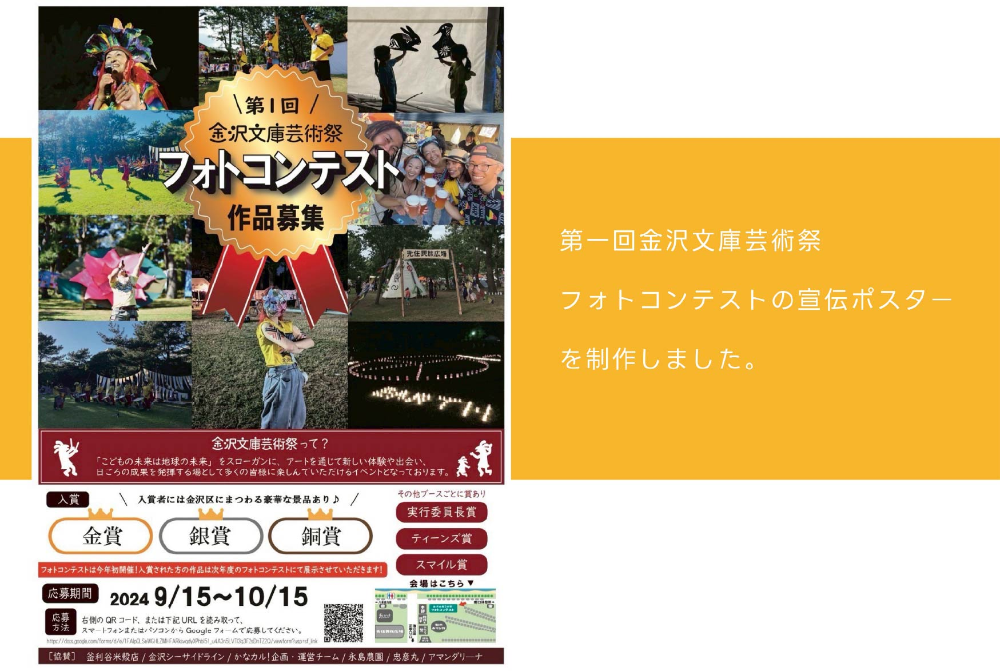
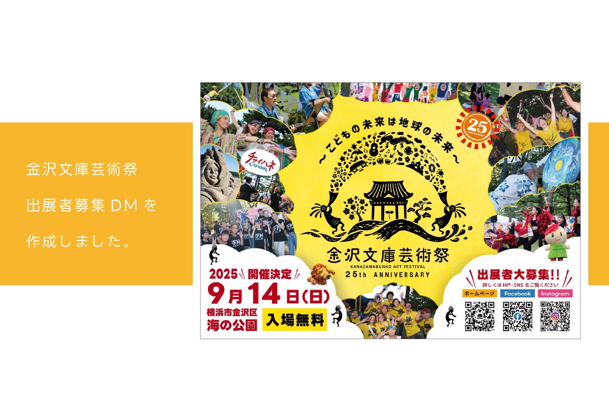
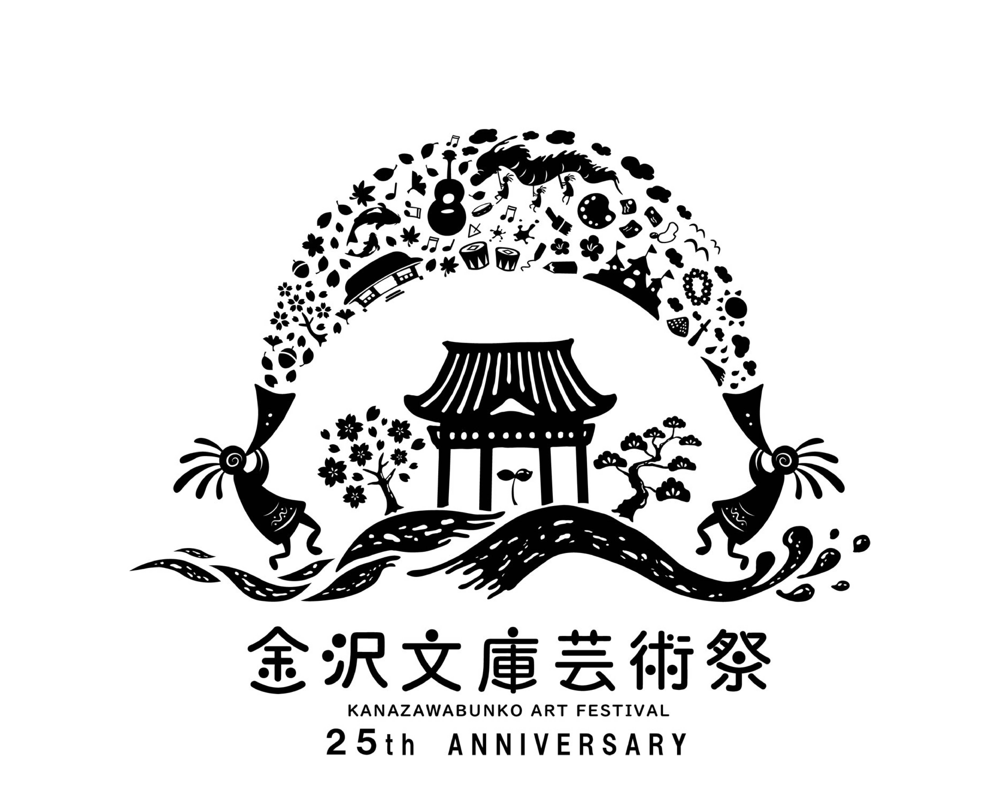
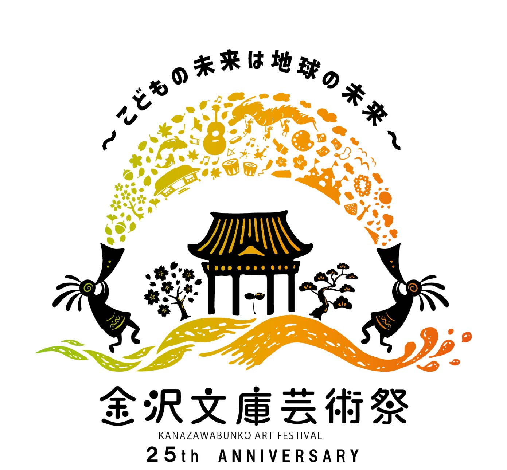

Poster design


Logo design

金沢文庫芸術祭２５周年記念ロゴの企画・制作を担当しました。

「ココペリがつなぐ虹の架け橋」
インディアンの精霊・ココペリには、笛を吹くことで木々が生い茂り、人々に幸せをもたらすという言い伝えがあります。そこから着想を得て、ココペリの笛の音が自然を育み、心を豊かにする様子を描いています。画面の左側は過去、右側は現代を表しています。
左に描かれた桜や、裏山に広がる風に揺れる草原は称名寺を、右に描いた松の木や波の模様は海の公園を象徴しています。
ココペリは過去と現代をつなぐ存在として登場し、人々が受け継いできた伝統を未来へとつなぐ虹の架け橋となっています。